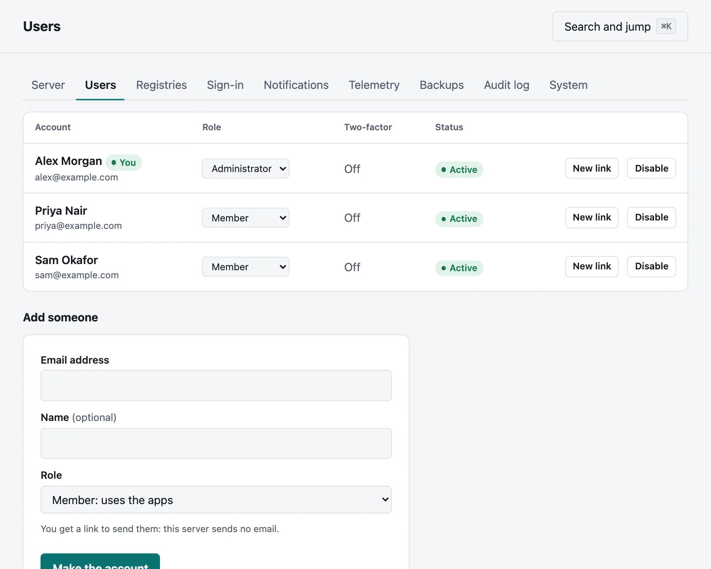
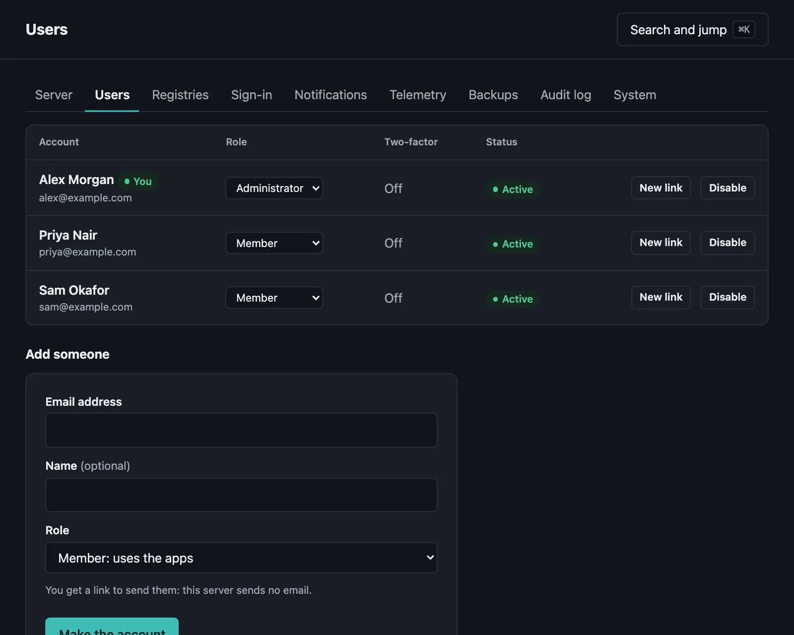
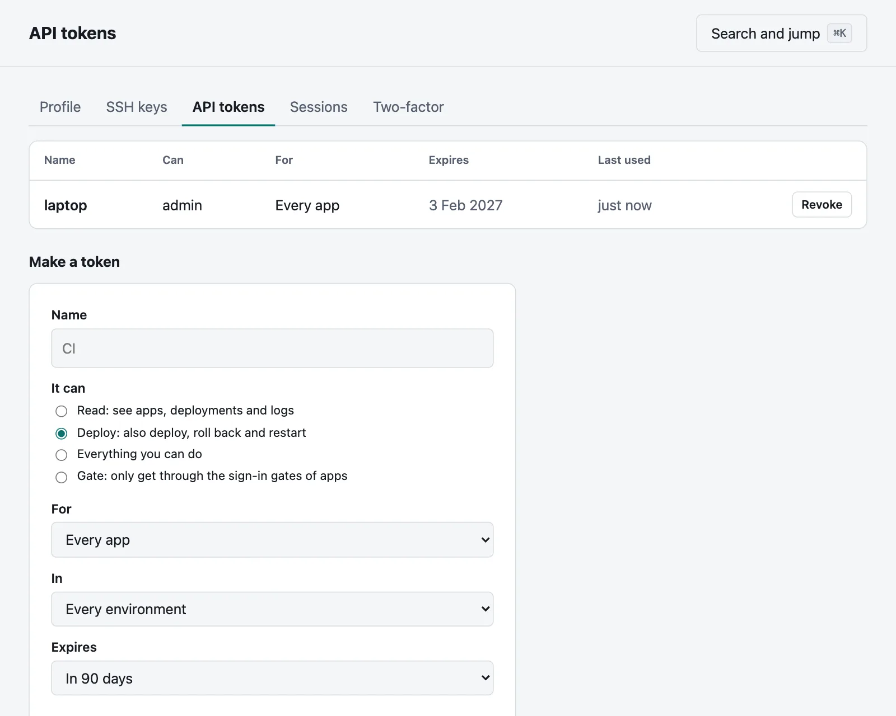
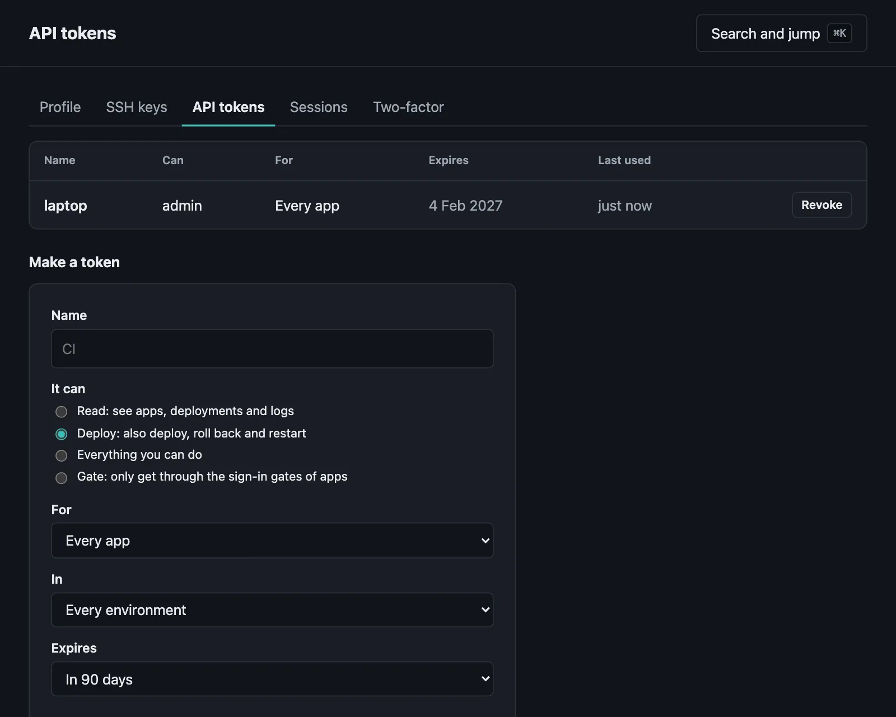
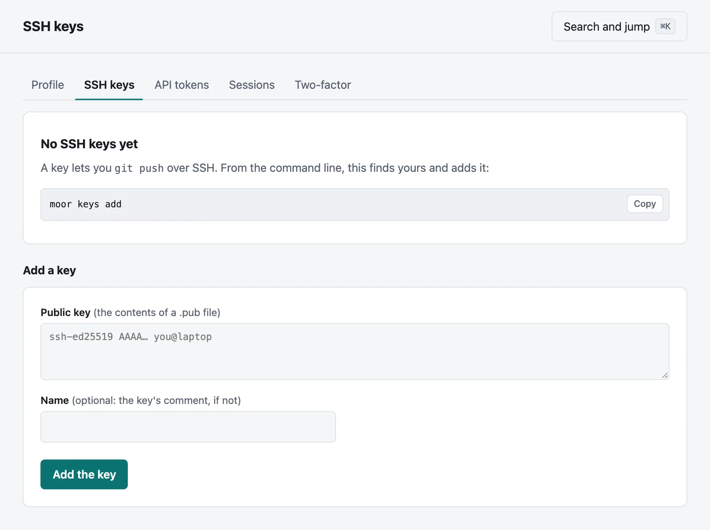
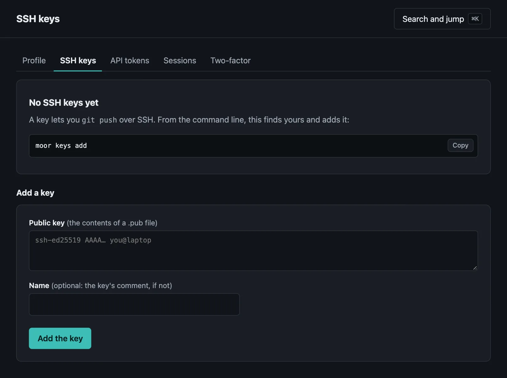

Accounts and access
Claiming a server, signing in, users, projects and roles, API tokens and SSH keys.
On this page
Moorage has user accounts, API tokens and SSH keys. On your own computer you need none of them: the command line on the server's machine finds the server and its local admin token by itself. Accounts are for everyone else, and for every other machine.
Claim the server#
moor server init prints a one-time setup link; moor server status and the server's log show it too, until it has been used:
http://moorage.apps.example.com/setup?code=GwGm7GLHatbyETw…Open it and create the first account, which is the server's administrator. Only someone who can read the link can do this, so nobody can race you to a server that has just been installed.
Sign in from the command line#
From any machine:
moor login https://moorage.apps.example.comYour browser opens the server's approval page. Sign in there, check that the code it shows is the one in your terminal, and approve: the command line receives a token, and no password is typed into the terminal. The server and token are saved as a context, in config.toml in your user's configuration directory ($MOOR_CONFIG overrides it), readable only by you.
moor whoamimoor context # the servers you have signed in tomoor context use NAME # switch between themmoor logout # revokes the token and forgets the contextOn a machine with no browser, open the address it prints on another machine, or create a token elsewhere and pass it on standard input:
moor login https://moorage.apps.example.com --with-token < token.txtWith Moorage's own CA, add --ca-cert ca.crt; the context remembers it.
Add people#
An admin creates accounts, and sends each person a one-time link to choose a password. Moorage does not send email itself.


moor server users create ada@example.com --name "Ada Lovelace"Created ada@example.com (member). Send them this link, to choose a password. It works once, until 10 Nov 14:02:
https://moorage.apps.example.com/invite?code=Vq3…| Command | What it does |
|---|---|
moor server users | Lists the users |
moor server users create EMAIL [--name N] [--admin] | Creates a user, and prints their link |
moor server users invite EMAIL | Prints a new link: for a forgotten password, or one that expired |
moor server users role EMAIL admin|member | Changes a role |
moor server users disable EMAIL | Ends their sessions; their tokens and keys stop working |
moor server users enable EMAIL | Enables them again |
Passwords have at least 12 characters, and the most common ones are refused. Moorage keeps only an Argon2id hash. The last enabled admin cannot be demoted or disabled.
Roles. An admin manages the server and its users, and may do everything with every app. What a member may do depends on their role in each project.
Projects and roles#
Apps belong to projects, and people have roles in projects:


| Viewer | Deployer | Maintainer | Admin | |
|---|---|---|---|---|
| See the app, its status and its deployments | ✓ | ✓ | ✓ | ✓ |
| Read its logs | ✓ | ✓ | ✓ | ✓ |
| Deploy, restart, roll back and scale; see its variables, but not secrets | ✓ | ✓ | ✓ | |
| Change its variables, reveal secrets, move it; manage the project's members | ✓ | ✓ | ||
| Make projects, manage users and the server; read the audit log | ✓ |
Someone with no role in a project cannot tell its apps exist.
Every server starts with one project, default, in which everyone is a maintainer: nothing changes until you say so. So a team that trusts each other needs do nothing. To keep an app apart, make a project for it:
moor projects create paymentsmoor projects add-member payments ana@example.com --role deployermoor apps create ledger --project paymentsmoor apps move shop --project paymentsmoor projects set NAME --everyone viewer gives everyone else a role, and --everyone none takes it away, which you can do to default too. --viewers-see-logs=false keeps logs from viewers, because logs can hold what they should not see. A first deployment makes its app in default, which takes a role there.
A token can do no more than its owner, and its scope can narrow that further: a token with the read scope only reads, whatever its owner's role. Deploying is running code on the server, so give deployer to people you would give shell access.
Who did what#
Every change through the API or the console, every sign-in, every push and every secret revealed is kept for a year, with who, from where, what to, and how it went. Nothing of what was sent goes in the record. Administrators read it under Settings, Audit log:


moor audit --actor ana@example.com -n 20The API has it at GET /api/v1/audit, and ?format=ndjson gives all of it, to keep.
Two-factor sign-in#
Your account → Two-factor adds a code from an authenticator app to signing in with a password: scan what it shows, and enter the code the app makes to turn it on. You get ten recovery codes, once each, for if you lose the app. Keep them somewhere safe.
A code or a recovery code works once. Someone who has lost both can have an administrator turn it off for them, in Settings → Users, and a link to choose a new password does not get round it. API tokens and SSH keys are separate from it, and signing in from moor login goes through your browser.
API tokens#
Tokens are for scripts, CI, and git over HTTPS. A token can do what its scope allows and its owner may do.


moor tokens create ci --scope deploy --app shop --expires 90dThe secret is printed to standard output, this once. Moorage keeps only its hash.
| Scope | What it allows |
|---|---|
read | See apps, deployments, releases, instances and logs; fetch repositories |
deploy | Also deploy, restart, roll back and push; see variables |
admin | Also change variables; manage its owner's tokens, keys and sessions; for an admin, manage users |
--app restricts a token to one app: it sees and reaches nothing else, and cannot manage credentials. --expires ends it after a time. moor tokens lists yours with when each was last used, and moor tokens revoke NAME ends one at once. Scripts pass a token with MOOR_TOKEN (and MOOR_SERVER), or --token.
SSH keys#
moor keys add registers your public key on your account, so that your pushes over SSH are yours (Deploying with git push). A key belongs to one account.


The server's local admin token#
The server writes an admin token to keys/admin-token in its data directory, readable only by the server's user. It lets the command line on the server's machine work without signing in, as an administrator with no account: this is what sudo moor … uses.
Once the server has accounts, this token works only from the server's own machine. Before that it works from anywhere, as in 0.1.0. Elsewhere, sign in or use an API token. Delete the file and restart the server to replace it.
The local administrator can also create tokens and register keys. They belong to no account, and keep working from anywhere until they are revoked.
Sessions and sign-in limits#
A browser's session ends after 7 days unused, and after 30 days in any case. GET /api/v1/me/sessions lists yours, and DELETE ends one. Repeated failures slow down, per address and per account, up to 15 minutes between attempts; a locked-out person can still use a token or key. Failures are written to the server's log, as security: lines. Behind a proxy, addresses come from the X-Forwarded-For of the proxies listed in [proxy] trusted.